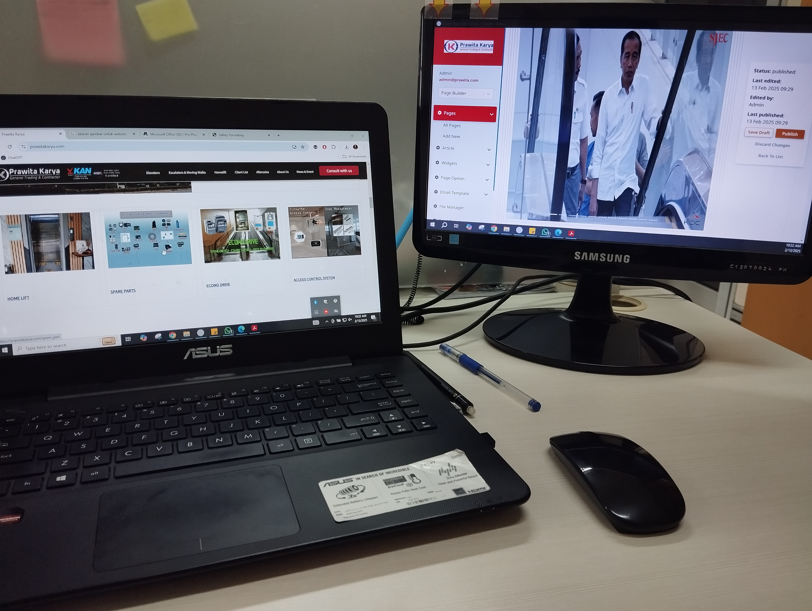
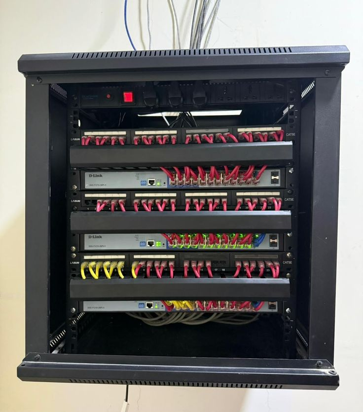
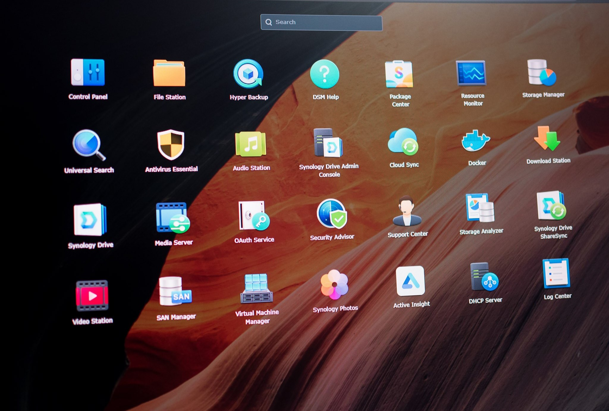
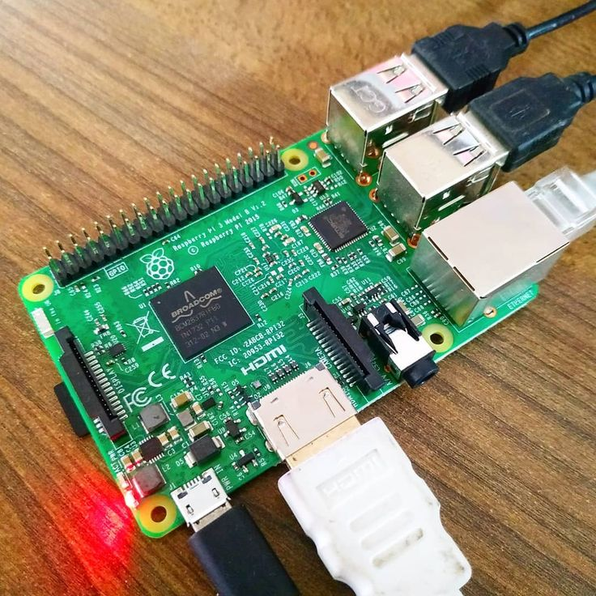

.jpg)
IT Support professional with over 10 years of experience in IT operations, technical support, and infrastructure management. Skilled in Windows, macOS, networking, server administration, Microsoft 365, CCTV, and IT asset management. Experienced in troubleshooting, system maintenance, and corporate website management. Also supported by an Electrical Engineering background.
2025 – 2026
2024
2015 – 2023
2010 – 2012
2010 – 2014
STMIK PASIM Sukabumi
Website development, design improvement, content management, and maintenance for corporate websites.
Technologies: HTML, CSS, JavaScript, Wix

Deploying and maintaining websites on VPS hosting, including web server configuration, file management, troubleshooting, and website updates.
Technologies: Linux, VPS, Nginx, HTML, CSS

Providing IT technical support for corporate town hall meetings, including fully onsite events and hybrid live sessions. Supporting management presentations and communication with employees attending onsite and remotely through live video conferencing.
Technologies:
.JPEG)
.JPEG)
.JPEG)
Network setup and configuration using MikroTik, including LAN connectivity, routing, network management, and troubleshooting.
Technologies: MikroTik, TCP/IP, LAN, DHCP

Setup and configuration of Synology NAS, domain management, user accounts, shared folders, and file access permissions.
Technologies: Synology DSM, NAS, Domain, File Sharing

Raspberry Pi setup, operating system installation, device configuration, and deployment for IT-related projects.
Technologies: Raspberry Pi, Linux, Hardware Configuration

Sukabumi, 43123